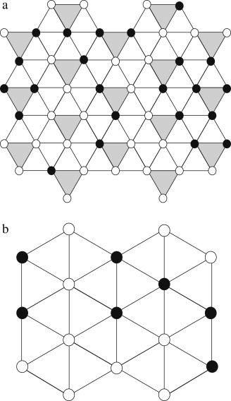
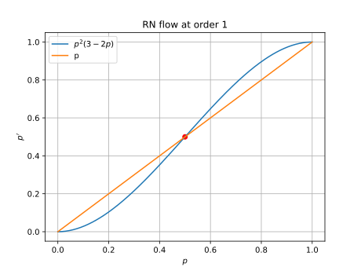

What is renormalization?
Renormalization is not group theory. The name “renormalization group theory” is truly terrible. To an applied physicist, the name “group theory” is abstract and inspires fear and uncertainty. To a mathematician, the name “group theory” is plain wrong, because you can always undo a group-action, but you can never undo a coarse-graining.
The logistic map: RN on \(\mathbb{R}\)
Thus, we obtain the self-similarity equation
\[ f(x) = -\alpha f\left(f\left(\frac{x}{-\alpha} \right)\right) \]
In words, if we scale up the graph for \(f^2\) by \(\alpha\), then rotate by 180 degrees, we get back the graph for \(f\).
By eye-balling the curve, we see that \(f\) should be an even function. Also, since the \(f^2\) can be graphically calculated by doing the cobweb diagram with the graph of \(f\), it does not matter if we first scale up the graph of \(f\) by a factor of \(r\) to \(F\), then double it to \(F^2\), or if we first double it to \(f^2\), then scale its graph. We would get back the same thing. Thus, wolog, we can scale \(f\) such that \(f(0) = 1\).
So, our task is to solve the following equation:
\[ \begin{cases} f(x) = -\alpha f\left(f\left(\frac{x}{-\alpha} \right)\right)\\ f(x) = 1 - a_2 x^2 + a_4 x^4 + \dots \end{cases} \]
At order 2, we approximate by \(f(x) \approx 1 - a_2 x^2\), and ignore all higher-order terms. This gives us two equations for two unknowns:
\[ \begin{cases} 1-a_2 = \frac{1}{-\alpha} \\ \frac{2a_2^2}{\alpha} = a_2 \end{cases} \]
It has two solutions. One solution has \(\alpha < 0\), which we know is unphysical. The other one is
\[ \begin{cases} \alpha = 1 + \sqrt{3} \approx 2.732 \\ a_2 = \frac{1 + \sqrt{3}}{2} \approx 1.366 \end{cases} \]
What happens if we are not exactly at the fixed point, but starts slightly off? Let’s say we start with a function \(f_0(x) = 1 - a_{2,0}x^2\), where \(a_{2,0} = a_2^* + \Delta\), where \(a_2^*\) is the fixed point, and \(\Delta\) is small but nonzero. Here we should think of the space of possible functions. Each point in this space is a possible scaling limit, but start a bit too small and we fall into boredom, start a bit too high and we fall into chaos. Start just right, and we harvest a beautiful fractal.
After one iteration, we have \(f_1(x) = -\alpha_0 f_0(f_0(x/(-\alpha_0)))\), where \(\alpha_0\) was fixed by \(f_1(0) = 1\). This gives us
\[ \begin{cases} \alpha_0 = \frac{1}{-1+a_{2, 0}} \\ \frac{2a_{2, 0}^2}{\alpha_0} = a_{2, 1} \end{cases} \]
That is, we have the renormalization flow equation
\[ 2a_{2, 0}^2(a_{2, 0}-1)= a_{2, 1} \]
We can plot the space of all possible \(f(x)\) as a line, like
\[1-0x^2, 1-0.5 x^2, 1-x^2, 1-1.5x^2, \dots\]

This is a 1-dimensional slice of the space of all possible \(f\) (the space of theories). Then, the effect of repeatedly applying the self-similarity map is to iterate the map \(a_2 \mapsto 2a_{2}^2(a_{2}-1)\). If we are precisely at the fixed-point \(a_2^*\), then we are not going anywhere, but if we are not exactly there, then since the slope of \(a_2 \mapsto 2a_{2}^2(a_{2}-1)\) is \(\delta \approx 5.73\) at that point, we would get farther and farther away:
\[ f_0 = 1-(a_2^* + \Delta)x^2, \quad f_1 = 1-(a_2^* + \delta\Delta)x^2, \quad f_1 = 1-(a_2^* + \delta^2\Delta)x^2, \quad \dots \]
and after \(\log_\delta(\frac{0.1}{\Delta})\), we would be at roughly \(1-(a_2^* \pm 0.1)x^2\), which is when we can finally notice that we are obviously no longer in the neighborhood of the fixed point anymore. If we start at \(a_2^* + \Delta/\delta\), then we can sustain the illusion for one more iteration. Similarly, if we start at \(a_2^* + \Delta/\delta^n\), then we can sustain the illusion for \(n\) more iterations.
Now, thinking back to what the logistic map says, we understand what we have discovered: The graph of \(f_{r^* - \Delta}\) is similar to the graph of \(f_{r^* - \Delta/\delta}^2\) scaled by \(-\alpha\). If we let \(r_1, r_2, r_3, \dots\) be the points at which the logistic map splits into a stable cycle of period \(2^1, 2^2, 2^3, \dots\), then we have \(r_{n} \approx r^* - \Delta/\delta^{n}\), and so we have:
\[ \frac{r^* - r_n}{r^* - r_{n+1}} \to \delta \]
This is usually spoken in this way: the intervals between two bifurcations shrinks at a rate of \(\delta\).

\(\delta\) is called Feigenbaum’s first constant, and \(\alpha\) is Feigenbaum’s second constant.
Similarly, we can solve the equation at order 4 by plugging in \(f(x) \approx 1 - a_2 x^2 + a_4 x^4\), obtaining 3 equations for 3 variables:
\[ \begin{cases} 1-a_2+a_4 = \frac{1}{-\alpha} \\ \frac{2a_2^2 - 4a_2a_4}{\alpha} = a_2 \\ \frac{a_4(4a_4+6a_2^2) - a_2(2a_4 + a_2^2)}{-\alpha^2} = a_4 \end{cases} \]
To solve this numerically, first guess a solution from the previous one, \(\alpha \approx 2.732, a_2 \approx 1.366\), then plug into the first equation to get \(a_4 \approx 0\). Then, standard numerical root-finding gives
\[ \begin{cases} \alpha \approx 2.534 \\ a_2 \approx 1.522 \\ a_4 \approx 0.128 \end{cases} \]
We can also make the same argument using a flow in theory-space, except now we are doing it over a 2-dimensional slice of it. The flow map is
\[ F(a_2, a_4) = \left( (2a_2^2 - 4a_2a_4)(-1+a_2 - a_4), -(a_4(4a_4+6a_2^2) - a_2(2a_4 + a_2^2))(-1+a_2 - a_4)^3 \right) \]
At the fixed-point \((a_2, a_4) = (1.522, 0.128)\), the Jacobian matrix is \[ \nabla F = \begin{bmatrix} 6.0506 & -6.2524 \\ 1.2621 & -1.6909 \end{bmatrix} \]
This matrix has eigenvalues of \(4.843, -0.483\), so it is a saddle point, with \(\delta = 4.843\). The flow and the eigenvectors \((0.982, 0.190), (0.691, 0.723)\) are plotted below.

In summary:
| Order 2 | 4 | \(\infty\) | |
|---|---|---|---|
| \(a_2\) | 1.366 | 1.522 | 1.530 |
| \(a_4\) | 0.128 | 0.105 | |
| \(\alpha\) | 2.732 | 2.534 | 2.503 |
| \(\delta\) | 5.73 | 4.843 | 4.669 |
Even in this tiny problem, we can already draw several lessons, which will appear again and again in RN:
- We assume a function is self-similar, and calculate from there.
- Self-similarity is a transform on a function (or “theory”).
- If we repeatedly apply the self-similarity transform on a function, we would obtain a scaling limit, a perfectly self-similar object – a fractal.
- In the space of all possible theories, the self-similarity transform creates a flow-field in the theory space. The interesting fixed-points of the flow-field are its saddle points.
- The largest eigenvalue of the saddle point describes what happens when you are close to the saddle point, but not quite there.
- Bravely calculate using the cheapest approximation you can think of. It often gets you within 50% of the right answer.
- But if you want accuracy, you can always use a computer and calculate many orders higher.
The Ising model: RN on a lattice


This is an example of real space RN. Real space RN is a garden of tricks,
The Ising model in \(\mathbb{Z}\)
So far, we have been doing it for the Ising model on \(\mathbb{Z}\). But it’s clear that we can also do it for two \(\mathbb{Z}\) put side-by-side like a ladder. Each “rung” of the ladder can be thought of as one big atom, with 4 possible states: up-up, up-down, down-up, down-down. We can then do the same calculation as the previous case, except that instead of a \(2\times 2\) matrix, we have a \(4 \times 4\) matrix.
For that matter, we can do it for any finite number of those \(\mathbb{Z}\) put together. We can then imagine doing that for such ladders with widths \(2, 3, 4, 5, 6, \dots\), then discover a pattern, and take the limit. If this works, we would solve the Ising model on \(\mathbb{Z}^2\).
Arduous as it sounds, this is exactly how Lars Onsager arrived at his solution of the Ising model in \(\mathbb{Z}^2\). He calculated up to ladders with width 6, diagonalizing matrices of size \(64\times 64\) in the process, then he guessed the general pattern and proceeded from there, emboldened by the guess. As Chen-Ning Yang reported:
In 1944, L. Onsager produced, quite unexpectedly, an exact evaluation of the partition function of the model in two dimensions. It was a real tour de force. I had studied his paper in Chicago in the spring of 1947, but did not understand the method, which was very, very complicated, with many algebraic somersaults….
In March, 1965… I asked him how it came about that he took all those complicated algebraic steps in his paper of 1944. He said he had a lot of time during the war, so he began to diagonalize the transfer matrix, which had already been discussed by E. Montroll and by H. A. Kramers and G. H. Wannier. He started with a \(2 \times \infty\), then a \(3 \times \infty\), then a \(4 \times \infty\) lattice. He then went on to a \(5 \times \infty\) lattice, for which the transfer matrix is \(32 \times 32\) in size. Such a matrix is quite large, but the experience he had gained with the smaller matrices came in handy, and he was able, after some time, to find all 32 of the eigenvalues. He proceeded then to the \(6 \times \infty\) case, and eventually diagonalized the \(64 \times 64\) matrix, finding that all the eigenvalues were of the form \(e^{\pm \gamma_1 \pm \gamma_2 \pm \gamma_3 \pm \gamma_4 \pm \gamma_5 \pm \gamma_6}\). That led to the concept that the algebra of the problem was a product algebra, and hence the manipulations in his paper. (Yang 2005, 11–13)
I also want to quote this from the same pages, because it describes accurately what it feels like to do real-space RN:
a long calculation, the longest in my career. Full of local, tactical tricks, the calculation proceeded by twists and turns. There were many obstructions. But always, after a few days, a new trick was somehow found that pointed to a new path. The trouble was that I soon felt I was in a maze and was not sure whether in fact, after so many turns, I was anywhere nearer the goal than when I began. This kind of strategic overview was very depressing, and several times I almost gave up. But each time something drew me back, usually a new tactical trick that brightened the scene, even though only locally. Finally, after about six months of work off and on, all the pieces suddenly fitted together, producing miraculous cancellations, and I was staring at the amazingly simple final result [spontaneous magnetization of the Ising model] (Yang 2005, 12)
Kadanoff decimation, take 0
This section based on (Simkin and Roychowdhury 2011, sec. 10), which contains an extensive bibliography.
The problem: given a hexagonal grid, you make \(p\) of them black and the rest white. What is the critical \(p\) where you get a percolation (infinitely big black island)?
Renormalization by the triangles, as shown. After one iteration, the lattice length increases from \(l\) to \(\sqrt 3 l\) , and the renormalized occupation probability changes from \(p\) to \(p^3 + 3p^2(1-p) = p^2(3-2p)\).

The equilibrium point is \(p=1/2\). This is the percolation probability. Let the reduced probability be \(\bar p = p-1/2\). We find that one iteration of the RN flow makes \(\bar p_{n+1} = \frac 32 \bar p - 2 \bar p^3\) which is \(\approx \frac 32 \bar p_n\) for small values of \(\bar p\).

Suppose we start with \(\bar p_0\) , and we perform \(N\) repeats of RN to reach some constant \(\Delta \bar p\) (for example, 0.001), then \[N = \frac{\ln \Delta \bar p - \ln \bar p_0}{\ln \frac 32}\]
during which time, the lattice length has increased by \[3^{\frac 12 N} \propto \bar p_0^{-\frac{\ln 3}{2\ln \frac 32}} = \bar p_0^{-1.36}\]
Since at constant \(\Delta \bar p\), the lattice has a certain fixed look-and-feel with a certain characteristic size for its clusters, we find that the characteristic length of its clusters is \(\propto (p-1/2)^{-1.36}\). The actual exponent (named \(\nu\)) is exactly \(1\). Not bad for such a cheap calculation!
Kadanoff decimation, take 1

Kadanoff decimation, take 2
This paper attracted much favorable notice since, beyond obtaining all the scaling properties, it seemed to lay out a direct route to the actual calculation of critical properties. On closer examination, however, the implied program seemed – as I will explain briefly – to run rapidly into insuperable difficulties and interest faded. In retrospect, however, Kadanoff’s scaling picture embodied important features eventually seen to be basic to Wilson’s conception of the full renormalization group.
Migdal bond-moving

With that simple idea I somehow got within 0.23% of the exact answer.
A bag of intuitions
Power laws are born of two exponential parents
In psychophysics, this is known as Stevens’ power law (Stevens 1970).
Why is there a phase transition with polynomial decay? Two exponentials cancel exactly, leaving only a polynomial.
Consider the Ising model on the plane. Fix an origin \(0\) , and we ask, how strong is the correlation between the origin \(0\) and a point that is at distance \((n, n)\) away from the origin, where \(n\) is large?
Well, the two points are correlated because they are connected by chains of spins. The more chains there are, the stronger the correlation, but the longer each chain is, the weaker the correlation.
How many chains? The shortest chains are of length \(2n\) , and there are \[{2n \choose n} \sim \frac{4^{n}}{\sqrt{n\pi }}\]
of them (use Stirling approximation).
Each chain has an exponential decay. We can use the 1D Ising model transfer matrix \[M^n = \begin{bmatrix} \frac{1 + \tanh^n(\beta J)}{2} & \frac{1 - \tanh^n(\beta J)}{2} \\ \frac{1 - \tanh^n(\beta J)}{2} & \frac{1 + \tanh^n(\beta J)}{2} \end{bmatrix} \]
The correlation is \(\tanh^n(\beta J)\).
Since the chain has length \(2n\) , we need to use \(\tanh^{2n}(\beta J)\).
We can think of spin at origin as \(x_{(0,0)} + z_1 + z_2 + \cdots\) and the spin at \((n, n)\) as \(x_{(n,n)} + z_1 + z_2 + \cdots\) , where \(z_1, z_2,...\) are random variables that are responsible for creating the correlations between the two spins along each chain. Then, since \(\ket{z_i}=0\) , we have correlation
\[\sim \frac{4^{n}}{\sqrt{n\pi }} \tanh^{2n}(\beta J)\]
The two terms are exactly balanced when \(\beta J = \tanh^{-1}(1/2) = 0.549\cdots\).
Now, the exact result is \(\beta J = 0.44\cdots\) , so our crude estimate is only \(25\%\) too high.
Now, right at the critical point, the correlation is \(\sim (n\pi)^{-1/2}\) , so we see that when the exponential decay in correlation is exactly matched with the exponential growth in possible paths, the remaining polynomial decay comes to the fore.
Notice that we have also calculated one of the Ising critical exponents: \(\nu = 1/2\). The actual answer is \(1\) , but it is actually \(1/2\) for all dimensions \(\geq 4\) (the mean field theory).
Similarly, with \[\binom{kn}{n, \cdots n}\sim \frac{k^{kn}}{n^{\frac{k-1}2}}\frac{k^{1/2}}{(2\pi)^{\frac{k-1}2}}\]
we can estimate the critical \(\beta J \approx \tanh^{-1}(1/k)\) in \(k\) -dimensions.
Universality
(battermanUniversalityRGExplanations2019?)
The theory of critical points in phase transitions is the paradigm example of universality.
macroscale - mesoscale - microscale
- macroscale: thermodynamics, continuum, no fluctuation.
- mesoscale: fluctuations in aggregates of atomic scale properties may be important, order parameters code for some feature of the microstructure.
- microscale: particles and quantum mechanics.
Criticality is just the space between two characteristic scales. The real question is why do we have characteristic scales that are so wide apart?
- BIB. Statistical physics: statics, dynamics and renormalization (Kadanoff 2000), p. 251
- shows an amazing variety of length scales: There is the Hubble radius of the universe, \(10^{10}\) light years or so and the radius of our own solar system, \(10^{11}\) meters roughly, and us-two meters perhaps, and an atom \(-10^{-10}\) meters in radius, and a proton \(10^{-16}\) meters, and the characteristic length of quantum gravity-which involves another factor of about \(10^{20}\). How these vastly different lengths arise is a very interesting and fundamental question…. However, we can think about how one describes the region between these lengths. If one is looking at scales between two fundamental lengths, there are no nearby characteristic lengths. Similarly in critical phenomena, whenever one looks [at] any event which takes place between the scale of the lattice constant [the spacing between molecules or spins] and the much larger scale of the coherence length, one is in a situation in which there are no nearby characteristic lengths.
Near the critical point, fluctuations are dominant and average values for the order parameters lose their meaning. Equilibrium statistical mechanics is unable to describe the critical behavior because there are fluctuations at all length scales.
The universality hypothesis
- BIB. From Order To Chaos II, Essays: Critical, Chaotic And Otherwise, p 273.
- All phase transition problems can be divided into a small number of different classes depending upon the dimensionality of the system and the symmetries of the order state. Within each class, all phase transitions have identical behaviour in the critical region, only the names of the variables are changed.
Universality hypothesis implies that if we have two Hamiltonians \(H_1, H_2\) where one can be smoothly perturbed to the other by \(H_\lambda := (1-\lambda)H_1 + \lambda H_2\) , and renormalization works on \(\lambda\) , then we can run the same scaling law method with \(\lambda\) too, and so the scaling laws for \(H_1, H_2\) are the same.
- BIB. From Order To Chaos II, Essays: Critical, Chaotic And Otherwise, p 275-276
Correlation length \(\xi\) is the largest fluctuation droplet that can form before it contains so much excess free energy that equilibrium thermodynamics asserts itself.
- BIB. From Order To Chaos II, Essays: Critical, Chaotic And Otherwise, p 274.
- Just below the critical temperature, the system has a free choice to make between being a liquid at high density or a vapor at low density. Both choices are equally good. But since liquid wants to be in contact with liquid and vapor with vapor, the system must decide.
- A natural fluctuation produces a droplet of the wrong phase. This droplet secretes other material of the same density, and it grows larger and larger. It stops growing when the cost in available—i.e. free-energy for making the droplet of wrong phase becomes comparable with kT. Since near the critical point it cost very little free energy per unit volume to make the wrong phase, the droplet can grow very large.
- The coherence length \(\xi\) is a size of a typical droplet. As the critical point is approached, the free energy cost of making a droplet goes to zero, and the size of a typical droplet \(\xi\) , goes to infinity.
Boiling water is just a magnet. Vapor is just up-spin and liquid is just down-spin.
- BIB. From Order To Chaos II, Essays: Critical, Chaotic And Otherwise, pp 297–299
- Droplet picture of correlation behaviour
- However, as criticality is approached, the difference in magnetization between the two different phases gets smaller and smaller. Hence the energetic cost per unit area of producing a region of the wrong phase approaches zero. For this reason, the area of a droplet and its radius both can get very, very large. Critical phenomena are connected with large-scale but weak fluctuations in the magnetization.
- So far, our picture of critical fluctuations is like that in Fig. 1.3. Droplets with spin down of all sizes up to a maximum size \(\xi\) appear near the critical point. However, this picture is incomplete. Each fluctuating region is also a nearly-critical system. Fluctuations appear within the droplets.
 {:height 469, :width 477}
{:height 469, :width 477} {:height 285, :width 458}
{:height 285, :width 458}
The two questions to be explained. Both can be explained by renormalization.
- Why are the phase transitions stable under perturbation of the microscopic Hamiltonians of the systems?
- The universality class is the basin of attraction of the fixed point. Scaling exponents and other universal properties are determined by the flow in a neighborhood of the fixed point.
- Why are the universality classes dependent upon the symmetry of the order parameter and the dimension?
- The renormalization flow depends on the symmetry and the dimension.
- Why are the phase transitions stable under perturbation of the microscopic Hamiltonians of the systems?
Renormalization is not trivial.
- We may well try to simplify the nature of a model to the point where it represents a ‘mere caricature’ of reality. But notice that when one looks at a good political cartoon one can recognize the various characters even though the artist has portrayed them with but a few strokes. … [A] good theoretical model of a complex system should be like a good caricature: it should emphasize those features which are most important and should downplay the inessential details.” (Fisher 1983, p. 47) Lange claims that here Fisher “seems to be supporting a ‘common features account’: the minimal model, despite being a caricature of some actual system, shares with it ‘those features which are most important’” (Lange 2015, p. 299, fn. 3).
- But renormalization theory explains more: it explains why those features matter and others don’t. It explains why we have universal classes according to symmetry and dimension and not, say, the precise shape of the atomic force laws.
Renormalization theory explains the use of effective Hamiltonians and toy models instead of microscopically accurate models. Specifically, one starts with some microscopic accurate model, then apply renormalization and show that the details fall away and we end up with the toy model.
The view from symmetries
| physical system | site types | |
|---|---|---|
| uniaxial magnet | up / down | |
| fluid | has atom / no atom | |
| brass crystal | zinc / copper | |
| simple lattice field theory | has particle / no particle |
| d | n | Theoretical Model (Ising Model) | Physical System | Order Parameter |
|---|---|---|---|---|
| 2 | 1 | Two dimensions | Adsorbed films | Surface density |
| 2 | XY model in two dimensions | Helium-4 films | Amplitude of superfluid phase | |
| 3 | Heisenberg model in two dimensions | Magnetization | ||
| >2 | ∞ | “Spherical” model | None | |
| 3 | 0 | Self-avoiding random walk | Conformation of long-chain polymers | Density of chain ends |
| 1 | Ising model in three dimensions | Uniaxial ferromagnet | Magnetization | |
| Fluid near a critical point | Density difference between phases | |||
| Mixture of liquids near consolute point | Concentration difference | |||
| Alloy near order-disorder transition | Concentration difference | |||
| 2 | XY model in three dimensions | Planar ferromagnet | Magnetization | |
| Helium 4 near superfluid transition | Amplitude of superfluid phase | |||
| 3 | Heisenberg model in three dimensions | Isotropic ferromagnet | Magnetization | |
| ≤4 | -2 | None | ||
| 32 | Quantum chromodynamics | Quarks bound in protons, neutrons, etc. |
Table reproduced from (Wilson 1979).
\(d=1\): Droplets inside droplets
Critical opalescence, boiling,


Just below the critical temperature, the system has a free choice to make between being a liquid at high density or a vapor at low density. Both choices are equally good. But since liquid wants to be in contact with liquid and vapor with vapor, the system must decide.
A natural fluctuation produces a droplet of the wrong phase. This droplet secretes other material of the same density, and it grows larger and larger. It stops growing when the cost in available—i.e. free-energy for making the droplet of wrong phase becomes comparable with kT. Since near the critical point it cost very little free energy per unit volume to make the wrong phase, the droplet can grow very large.
The coherence length \(\xi\) is a size of a typical droplet. As the critical point is approached, the free energy cost of making a droplet goes to zero, and the size of a typical droplet \(\xi\), goes to infinity.
However, as criticality is approached, the difference in magnetization between the two different phases gets smaller and smaller. Hence the energetic cost per unit area of producing a region of the wrong phase approaches zero. For this reason, the area of a droplet and its radius both can get very, very large. Critical phenomena are connected with large-scale but weak fluctuations in the magnetization.
So far, our picture of critical fluctuations is like that in Fig. 1.3. Droplets with spin down of all sizes up to a maximum size \(\xi\) appear near the critical point. However, this picture is incomplete. Each fluctuating region is also a nearly-critical system. Fluctuations appear within the droplets.
As you approach \(T_c = 2.269\dots\) from above, you notice that little droplets seem to condense out of a hot grey gas. Define reduced temperature as \(t = T/T_c - 1\). So that critical point is \(t=0\). When t is 0.1, there are small droplets. When t = 0.05, the droplets grow larger, but! If you zoom out by a factor of x (you can measure it experimentally by running two simulations and try to match them by eye, or by taking screenshots and match them with an image frequency analyzer), they look the same.
So, this means that spatially zooming out by x is equivalent to increasing the reduced temperature by 2.
It is a similar thing for \(t < 0\). At \(t = -1\), the entire field freezes into one color. As t increases, small droplets appear… There is another scaling law. By renormalization theory, the two scaling laws have the same exponent.
Renormalization is doing a zooming of the system. We start with the full system, then zoom it to describe it in a similar way that loses some details (and gains some details). This gives us another system. Repeated renormalization then is moving from one system to another in the space of possible systems.
This is called “renormalization flow in the space of Hamiltonians”.
The fixed points of the flow are then critical systems. You apply the RN and get the same thing. This is a fractal, because zooming in you get the same thing. So it also has a power law, \(1/f^a\) noise, and other things that fractals have.
Big whirls have little whirls that feed on their velocity,
and little whirls have lesser whirls and so on to viscosity.
Videos and interactives
Field theory: RN on \(\mathbb{R}^d\) where \(d\to \infty\)
Wilson’s Nobel Prize: RN flow in theory-space
Kenneth Wilson was awarded the 1982 Nobel Prize in Physics for his work on phase transitions
The modern perspective is the perspective of (Fisher 1998)


Reprise: What is renormalization?
Universality
In the early 20th century, material scientists noticed the remarkable phenomenon of “corresponding states”.
Sociophysics
A koan
“The details don’t matter.” said them triumphantly as they declared their independence from biophysics.
“‘the details don’t matter.’” said them mockingly as they declared their insurrection against sociophysics.
Explanation:
The traditional approach of historians, going back to the days of “kings and battles”, is to run to personality theory and the individual acts when confronted by a problem in sociology or economics! One establishes the individual actors, makes some (hopefully) sensible approximations of their personality makeups and then proceeds to attempt to explain for events, actions and so on. However, for truly complicated systems in what, these days, is much better called “sociophysics”, this is a hopeless task; furthermore, in many ways it is not even a very sensible one! The modern attitude is, rather, that the task of the theorist is to understand what is going on and to elucidate which are the crucial features of the problem. If one had a perfect archive of exactly what every person thought and said during the start of WWI, one would still have no understanding of why it started!
More is different (Anderson 1972)
Appendix
Probability
This section is based on (Amir 2020).
Let’s take a look at the central limit theorem. It says that if \(X_1, X_2, \dots\) are IID samples from a distribution with finite mean \(E[X]\) and variance \(V[X]\), then \(\frac{(X_1 + \dots + X_n) - n E[X]}{\sqrt{n V[X]}}\) converges to the standard normal distribution. If we think about it more carefully from the self-similarity point of view, we can think of it like this: we can decompose each \(X\) into a sum of two random variables: \(X_i = A_i + Z_i\), where \(Z_i\) is a normal distribution with the same mean and variance, and \(A_i\) is the “noise” part of it. Each \(A_i\) might be overpowering, but when we repeatedly coarse-grain by taking a bunch of \(X_i\), and adding them up (a lossy operation!), we would eventually destroy all traces of what cannot survive coarse-graining, and leaving behind a fixed-point of coarse-graining.
SETUP.
- \(X_1, X_2, \dots\) are IID random variables, with characteristic function \(\phi_X(t)= E[e^{itX}]\).
- \(S_n = X_1 + \dots + X_n\).
- \(a_n, b_n\) are two sequences of real numbers, such that \(\frac{S_n - b_n}{a_n}\) converges in distribution to a nontrivial random variable \(Z\) with characteristic function \(\phi(t)\).
Since \(\frac{X_1 + \dots + X_n - b_n}{a_n}\) converges in distribution to a nontrivial random variable, the sequence \(a_n\) must diverge to infinity. For, if the sequence \(a_n\) is bounded, then for large enough \(n\) , the sum \(X_1 + \dots + X_n\) would spread wider and wider, and dividing it by \(a_n\) cannot keep it together.
Let \(Z\) be a random variable with characteristic function \(\phi\). By assumption, \((S_n- b_n)/a_n\) is approximately distributed like \(Z\) , that is, \(S_n\) is approximately distributed as \(a_nZ + b_n\). Thus,
\[\phi_{S_n}(t) \approx e^{ib_n t}\phi(a_nt )\]
Given \(1 \ll n \ll N\) , we can compute \(\phi_{S_N}\) in two ways: adding it up as \(N\) copies of \(X\) , or adding it up as \(N/n\) copies of \(S_n\). Both should give us the same result. That is: \[\phi_{S_N} = \phi_X^N = \phi_{S_n}^{N/n}\]
However, since \(n\) is very large, we have the approximations \(\phi_{S_n}(t) \approx e^{ib_n t}\phi(a_nt )\). Thus, we have
\[ \ln \phi_{S_N}(t) \approx \frac{N}{n}(ib_n t + \ln\phi(a_n t)) \]
Note how we have an exponent of the form \(Nf(n)\) , where \(N\) is a very large number, and \(n\) is a number that is small compared to it. This is a common pattern in RN calculation.
Since \(n\) is small compared to \(N\) , but large compared to \(1\) , we can pretend that it’s a continuous variable, and take derivative of it. Since the left side is independent of \(n\) , the derivative should be zero:
\[ \partial_n \frac{N}{n}(ib_n t + \ln\phi(a_n t)) = 0 \]
Simplifying it, and substituting \(t\) for \(a_n t\) , we get the field equation
\[\frac{\phi'(t)}{\phi(t)}t - \ln \phi(t) \frac{a_n}{n \partial_n a_n} + it\partial_n (b_n/n) \frac{n}{\partial_n a_n} = 0\]
Thus, we have obtained the field equation:
\[\frac{\phi'(t)}{\phi(t)}t -\frac{a_n}{n \partial_n a_n} \ln \phi(t) + \frac{n\partial_n (b_n/n)}{\partial_n a_n} it = 0\]
which we can solve by standard mathematical analysis without any more use of RN, so we don’t do those. You can read (Amir 2020) if you are interested.
However, there is a problem: If we have a “field” equation, what is the “field”? Well, here is one way to think of it.
Imagine a line of atoms, at locations \(1, 2, 3, \dots\). Each atom has a height \(X_1, X_2, X_3, \dots\). Now, we can coarse-grain the system by a factor of \(4\), by defining
\[Y_1 = \frac{X_1 + \dots + X_4 - b_4}{a_4}, \quad Y_2 = \frac{X_5 + \dots + X_8 - b_4}{a_4}, \quad \dots\]
from which we can perform another coarse-graining by a factor of \(100\), ending up with a coarse-grain by a factor of \(400\). Now, if the system has a nontrivial scaling limit, then this should give us the same result as doing a coarse-graining by \(5\), then by \(80\), or first \(6\) then \(67\). This is the RN argument we used here.
Now, since \(S_n \approx a_n Z + b_n\), we see that \(b_n\) can be thought of as the coarse-grained height of height-field, and \(a_n\) as the coarse-grained jaggedness of the height-field. Then, the field equation describes how the two numbers vary according to \(n\).
The maximum of random variables often has a nontrivial scaling limit as well. That is, there exists some sequence \(a_n, b_n\) such that \(\frac{\max(X_1, \dots, X_n) - b_n}{a_n}\) converges to a nontrivial distribution with cumulative distribution function (CDF) \(F\).
Let \(F_X\) be the CDF of \(X\), then we have \(F_{\max(X_1, \dots, X_N)}(t) = F_{\max(X_1)}(t)^{N}\). Now, derive the field equation by an RN argument.
Answer: \(\partial_n \frac 1n \ln F(\frac{t-b_n}{a_n}) = 0\).